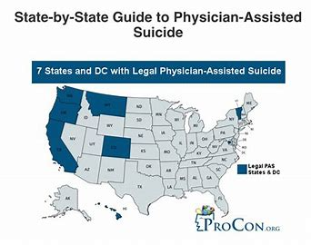

Image showing states that legalized Physician Assisted Suicide
We live in a world where pain is mostly invisible, especially when dealing with people suffering mentally, and people often have the shadow of misconception looming large over those struggling mentally. For some patients, the pain becomes overwhelming and too great of a burden to bear, in those moments they question everything and simply want peace and lack of suffering, because during those moments of pain and anguish they feel trapped in their mind, one that offers no escape, or moment of silence. Their relief would not be something temporary, because who would ever feel peace and choose war? Going from that sense of reason, death seems like a plausible option. However, if you bring in other crucial factors to this, I believe it would be harder to decide on whether death should be an option for people suffering from severe mental illness. This brings up my question: Should assisted suicide be an option for individuals suffering from severe mental illness?
Before diving into this complex topic, it is essential to define the key terms that form the foundation of this discussion:
Mental health may be described as the absence of mental sickness, or it can be defined as a state of being that incorporates the biological, psychological, or social variables that contribute to an individual's mental state and capacity to operate in the environment. (Manwell et al,1).
Mental illnesses are ailments that influence the way we think, feel, and act (Manderscheid, R. W,et al.) These conditions may leave a person unable to continue to continue their daily activities. Unlike general mental health issues, mental illness mostly requires medical intervention.
Types of Mental Illness Relevant to Assisted Suicide
There are multiple health conditions under mental illness that are relevant to assisted suicide, and I would like to briefly explain a few of them;
Schizophrenia is a disorder that people seem to believe is just hallucinating and that stems from the way it has been portrayed in movies, building up a wall of misconceptions around it. “Schizophrenia is a complex, diverse behavioral and cognitive condition that is caused by genetic and/or environmental disruptions in brain development. Dopaminergic neurotransmission dysfunction appears to have a role in the development of psychotic symptoms; however, evidence suggests a more extensive and varied involvement of brain regions and circuits. Positive symptoms (delusions and hallucinations; so-called psychotic symptoms in which there is a loss of contact with reality), negative symptoms (in particular impaired motivation, reduction in spontaneous speech, and social withdrawal), and cognitive impairment (as a group, patients with schizophrenia perform worse than controls across a wide range of cognitive functions, though there is much individual variability)”(Owen et al).
Depression (major depressive disorder) is a mental condition characterized by chronic sorrow and a loss of interest. Major depressive illness, often known as clinical depression, affects how you feel, think, and behave and can cause several emotional and physical difficulties. You may have difficulty doing routine daily chores, and you may feel as if life is not worth living (Understanding Depression: Symptoms, Causes and Treatments).
Physician-assisted suicide assisted suicide is a circumstance in which the patient is the one who carries out the action that ends his life by the administration of a fatal substance but has been supplied in the framework of health care and is therefore dubbed aided (Picón-Jaimes, Yelson Alejandro et al). The current application of physician-assisted suicide has traditionally been reserved for terminally ill patients or physical illness, there have been recent debates how to extend it to non-terminal- mental illness
Diagnosis and Patients
Can patients with severe mental health diagnosis have the right to decide that they want to die, more so if they feel like they are suffering an unbearable amount of pain always? This topic makes us question everything, should society not be able to do more to reduce their suffering rather than lending a hand to ending it all, or even considering it, or are we supposed to help them the moment the complain about too much pain without trying to help them? Besides if a person has “severe” mental illness are we sure these suicidal thoughts started because of the pain they have? I wondered about these questions for a long time, and I really could not understand how anyone would want to help someone mentally suffering die because they asked for it; however, after searching for answers to my question I found out that there was something called “Decision Making Capacity.” It is a significant factor in assisted suicide as a whole, as I dug deeper into this newfound information, I found a better explanation on what DMC is and why it is important here;
The concept of decision-making capacity (DMC) is vital in medical settings, particularly regarding patient’s right to make choices about their healthcare and end-of-life options. Individuals with mental health disorders such as depression, schizophrenia, or bipolar disorder often face scrutiny concerning their DMC due to concerns over their ability to make informed decisions. Nevertheless, studies show that a considerable number of people with these conditions can effectively manage their own healthcare decisions; Moreover, an individual's DMC may vary over time based on fluctuations in symptoms. It is essential to honor the autonomy of capable patients while ensuring they possess the necessary capacity for making critical decisions- especially when it comes to assisted suicide scenarios (Trachsel et al. 519-24).
Decision-making capacity plays a significant role in determining whether a patient can make healthcare decisions, and it is of even more importance when involved with assisted suicide. While I mostly agree with the whole basis of their point, I still doubt that a person with severe depression has a good decision-making capacity because there are multiple instances if not all where the consent is given by the medical power of attorney/ guardian called a surrogate decision making. I am aware that an argument would rise based on doctors deeming a patient with depression capable of making such decisions, however, the same doctors are the ones who deem these patients incapable of decision-making when their illness reaches a certain level which I believe is considered “severe".
Assisted Suicide and Laws
Apparently assisted suicide is permissible in some places under the court ruling, this is something I was interested in, wanting to know what the basis of the law being made was, the process, do they specify which illness is considered able to be given assisted suicide as an option? who it protects exactly, because depending on the state or country these laws could protect the patient or the physician or both.
The debate over assisted suicide raises significant concerns about the effectiveness of safeguards meant to protect vulnerable individuals. Paul Russell, founder of Hope: Preventing Euthanasia and Assisted Suicide, argues that no safeguard can guarantee safety unless every illness and treatment is explicitly defined in law. These protections primarily shield doctors from legal consequences rather than ensuring patients' safety. Assisted suicide effectively allows medical professionals to facilitate fatal overdose for some Americans under government endorsement, which poses risk not only for the patients but also the society at large. (Glenn Foster 56).
When dealing with a sensitive topic like assisted suicide we often try to avoid digging in deeper because this is a very controversial topic and causes a lot of arguments, however, with medical assistance in dying, there are two types of deaths, if that makes sense. There is the death caused by omission and death caused by commission. While they are not, these two are considered the same because there is little to no difference between them. So, because of this the authors Grassi, Luigi et al. authored an article titled “Debating Euthanasia and Physician-Assisted Death in People with Psychiatric Disorders.” in which they argued on the difference between euthanasia and assisted suicide and in one of the paragraphs, they mentioned an argument;
Ethics and Assisted Suicide
A further argument supporting MAiD-NT is to dissolve the distinction between deaths caused by actions and death caused by omissions or inaction. If no morally significant difference can be found between deaths caused by omissions or by actions, then, by extension, there are grounds for allowing for death caused by actions. In this sense, Rachels argues that letting a person die is a type of action, demonstrated by the fact that we would consider a doctor blameworthy if he needlessly let a person die (Grassi, Luigi et al.328).
Medical Assistance In dying always has two sides to it. The argument here is that if no morally significant difference between death caused by omission/inaction and death caused by action/commission, then patients should be allowed death by action. I believe there is a difference there, because the main difference between inaction and action death is intervention, with inaction the physician allows the pre-existing condition to take its course and carries less blame, while it still carries a moral responsibility there are a lot of ways to twist this one around, however with action (commission) the physician actively intervenes and this can be done through lots of ways like administering the wrong dose or a lethal dose or even the opposite medication. In this sense the person is solely responsible for the death by initiation. Intervention should be considered a big enough difference between these two, in the same way there is a difference between death by natural cause and death by terms for types of killing that end in the suffix -cide.
The world frowns upon suicide and even till this day I have seen videos and articles where the family and friends of the person who committed suicide and they mourn the persons death, and the whole internet mourns with them. If we support the idea of assisted suicide as an option, are we not clashing with our whole belief of suicide being wrong? Everyone has the same opinion about suicide, and we try to prevent it, it is frowned upon and leaves everyone with bad memories. So why do we split up “suicide” into the ones we are against and the ones we support, if we persecute murderers why do we support assisted suicide if the difference is whose life, it is? With these questions and arguments in mind I tried to find answers to them I found this article by the author Smith, Wesley J. where he spoke on how the western society looks at suicide and then standards for what is considered a good suicide or a bad one, in one paragraph he said: